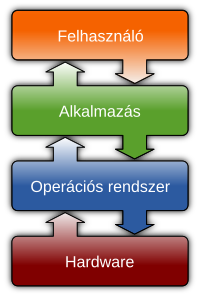

Operációs rendszernek (röviden OS az angol operating system alapján) nevezzük a számítástechnikában a számítógépeknek azt az alapprogramját, mely közvetlenül kezeli a hardvert, és egy egységes környezetet biztosít a számítógépen futtatandó alkalmazásoknak (például szövegszerkesztők, játékok stb.). A kezelt hardver-erőforrásoknak része többek között a memória, a processzor, a merevlemez és a perifériás eszközök használata.
Az operációs rendszerek alapvetően három részre bonthatók: a felhasználói felület (a shell, amely lehet egy grafikus felület, vagy egy szöveges), alacsony szintű segédprogramok és a kernel (mag), amely közvetlenül a hardverrel áll kapcsolatban. Vannak olyan operációs rendszerek, melyekben a kernel (mag) és a shell (héj) különválnak, így lehetőség nyílik ezek kombinációjára. Más rendszereknél, mint például a Windowsnál, ez a különválasztás mind elméleti, mind gyakorlati szempontból nehezebb.
A Unix monolitikus kernelre épül, ami mára elavultnak tekinthető, bár szerverek esetén szerencsés az ilyen. Ezeken a rendszereken nem különülnek el alapvetően a folyamat vezérlési, tárolási feladatok, illetve a rendszerhívások. A mikrokernel annyira kicsi, amennyire lehet, gyakorlatilag az egyetlen feladata az erőforrások újraelosztása az alkalmazások között. A Linux kernelje monolitikus kernel, azonban a programkód fordításakor megszabhatjuk, hogy mely részek kerüljenek betölthető állapotba, illetve melyek ne, így lehetőségünk van a modulok futás közbeni, dinamikus betöltésére, ami különösen asztali operációs rendszerek esetén célszerű. A Windows által használt hibrid kernel is ránézésre egy mikrokernel, de itt kernel módban fut az üzenetkezelés (Application IPC), és az eszközillesztők. (vö.: A Windows Vista új drivermodelljén egyes elemek átkerültek a felhasználói rétegbe).
A shell nélkül nem lehet programokat indítani. Tágabb értelemben UNIX alatt minden olyan programot shell-nek hívnak, melyek más alkalmazások elindítására képesek (a szöveges parancssor nem feltétel). Egy shell rendelkezhet grafikus, ikonos indító felülettel is, mint például az Ubuntu Unity vagy az Androidos launcher.
Az operációs rendszer feladatai közé tartozik, hogy felkészítse a számítógépet az alkalmazások futtatására. Az indítási folyamat során pontosan ez történik. Miután a számítógép öntesztje lefutott, a BIOS keresni kezdi az operációs rendszert a rendszertöltő szektorokban, és az elsőt, amit megtalál elindítja. Elsőként a kernel töltődik be és indul el. Innentől rendszerfüggő a folytatás, de nagy vonalakban általánosítható.
| Legelterjedtebbek otthoni számítógépeken | Történelmi vagy hobbi OP | Szervert futtatni képes OP | Beágyazott vagy mobil OP | |
|---|---|---|---|---|
| Microsoft | Microsoft Windows | MS-DOS | Microsoft Servers | Windows Phone |
| Apple | Mac OS X | Mac OS | - | IOS |
| Linus Torvalds | Linux | MINIX | Linux | - |